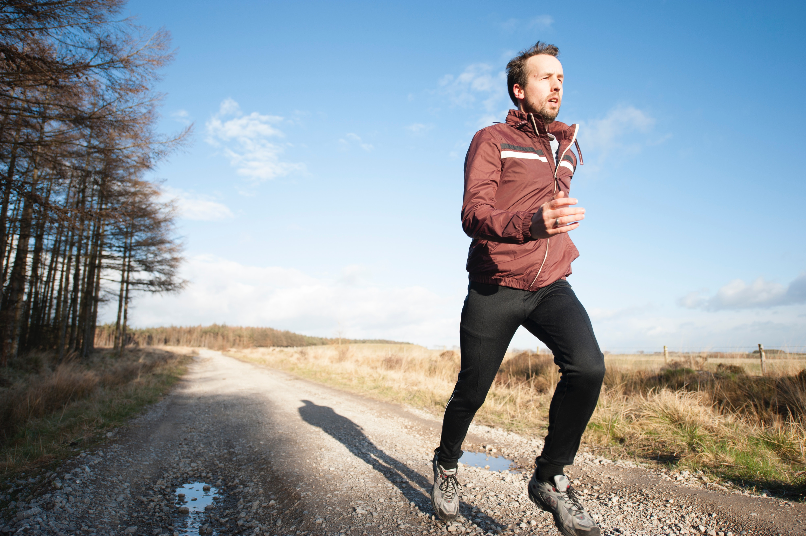
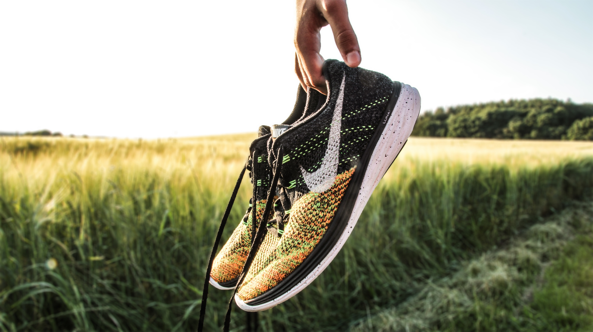

1/3

Løb i naturen
2/3

Trappe-træning
3/3

Løbesko
Det er ikke altid nemt at finde motivationen frem når man skal dyrke motion. Det er ofte svært at finde tid og overskud til at dyrke den motion man egentlig har lyst til. Vi vil derfor komme ind på hvad du kan gøre for at finde din indre løber frem og holde motivationen oppe.
Undskyldninger og overspringshandlinger er der nok af, når man skal yde noget der kræver lidt af os. Den klassiske undskyldning, når man bor i Danmark, er vejret.
Enten er det for koldt og blæsende eller for solrigt og stegende varmt. Ellers er man kommet træt og udkørt hjem fra arbejde eller skole og har ikke overskud til andet end at lægge sig på sofaen med fjernbetjeningen i hånden. Men hvorfor er det egentlig så svært at komme afsted?
Vi ved jo alle sammen at man har det SÅ godt bagefter. Overskuddet og energien er jo ikke til at overskygge af begejstringen over at løbeskoene ikke længere står fine og ubrugte, stadig i skotøjsæsken, i bundet af skabet når de sidste 100 meter hen til målet er nået. Men hvorfor er løbemotivationen så svær at finde? Og hvad kan vi gøre for at løbeskoene ikke føles så tung som en ridderbrynje?
For langt de fleste kan et håndgribeligt mål være en stor motivation når det drejer sig om løb. Det kan enten være på løbeturen, hvor du ganske enkelt sætter en dagsorden for dagens træning. Det kan være ved fx at beslutte dig for at løbe en km. i et stræk eller løbe hen til det næste træ på vejen. Sæt dig et mål der kan hjælpe dig til at aflede dine tanker fra trætte ben og sidestik.